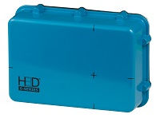
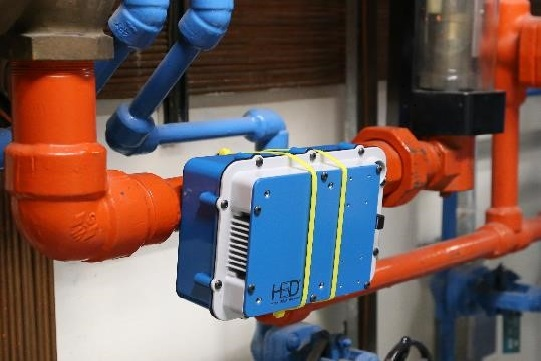
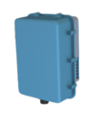

영구장착/이동형 방사선 모니터링 솔루션: S Series는 방사선원의 변화 및 모니터링이 필요한 특정 산업현장에서 실시간으로 선원의 종류와 변화량을 추적할 수 있습니다. S100/S400 시리즈는 특정공간에 부착하여 실시간으로 방사선원을 모니터링하거나 태블릿과 함께 움직이며 사용할 수 있는 유연성을 제공합니다. 특정 파이프 라인 또는 밸브에서의 방사선원 변화를 모니터링 하거나 관심공간에서 시간에 따른 선원의 변화를 실시간으로 체크할 수 있습니다.


| Model | Resolution (@662 keV) |
Spectral Range (keV) |
Imaging Range (keV) |
Coll. (W*) |
CZT Vol. (cm3) |
Weight (lbs.) |
Battery (hrs.) |
IP Rating |
Temp. (°F) |
Startup Time (분) |
User Interface |
|
|---|---|---|---|---|---|---|---|---|---|---|---|---|
 |
S100 | < 1.1 | 50 to 3000 | N/A | N/A | >4.5 | 5.2 | >2 | IP65 | -4 to 122 | < 1.5 | Tablet / Webpage |
| S100+ | < 0.8 | 50 to 3000 | N/A | N/A | >4.5 | 5.2 | >2 | IP65 | -4 to 122 | < 1.5 | Tablet / Webpage |
|
| S100x | < 1.1 | 50 to 9000 | N/A | N/A | >4.5 | 5.2 | >2 | IP65 | -4 to 122 | < 1.5 | Tablet / Webpage |
|
| S400 | < 1.1 | 50 to 3000 | N/A | N/A | >19 | 5.4 | >2 | IP65 | -4 to 122 | < 1.5 | Tablet / Webpage |
|
| S400+ | < 0.8 | 50 to 3000 | N/A | N/A | >19 | 5.4 | >2 | IP65 | -4 to 122 | < 1.5 | Tablet / Webpage |
|
| S400x | < 1.1 | 50 to 9000 | N/A | N/A | >19 | 5.4 | >2 | IP65 | -4 to 122 | < 1.5 | Tablet / Webpage |